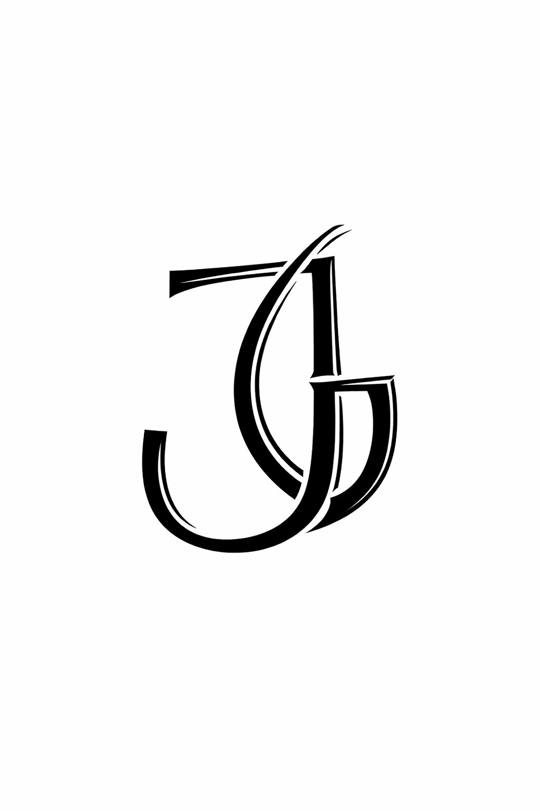
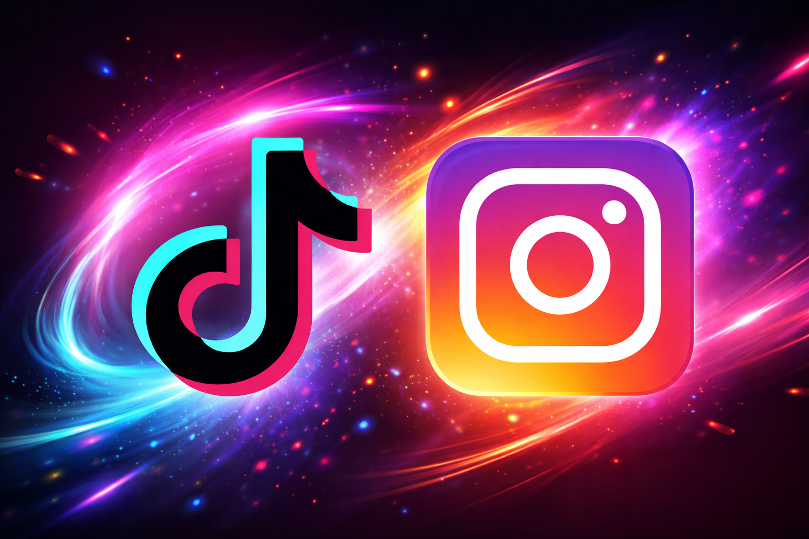

Soy Javi, aunque muchos me conocen como Javiga.
Y si hay algo que me define es esto: tengo una ambición que no se apaga.
Desde siempre he sido de los que prefieren ganarse cada logro por sí mismos. Nada regalado. Nada a medias. Me considero adicto al progreso, pero no solo al resultado… disfruto el proceso, el aprendizaje, la mejora constante y cada pequeño paso hacia adelante.
He completado mis estudios obligatorios, terminé el bachillerato y actualmente estoy formándome en el Grado Superior de Desarrollo de Aplicaciones Multiplataforma (DAM), construyendo las bases de lo que será mi camino profesional.
Esto no va solo de estudiar. Va de crecer, crear y convertir metas en resultados.
Y esto es solo el comienzo.

Las motos no son una afición para mí. Son una parte de quién soy.
Aunque mi experiencia aún es corta, siempre he estado rodeado de personas que viven este mundo con pasión: desde amigos de la infancia hasta gente profundamente metida en la cultura motera. Ese entorno no solo me acercó a las motos… me contagió una forma de vivir.
Con 17 años me compré mi primera y hasta ahora única moto: una KTM Duke 125. Para algunos puede no parecer un gran logro. Para mí fue enorme. Fue el resultado de esfuerzo, ahorro y muchas ganas. No fue suerte. Fue trabajo.
Y gracias a este mundo se me han abierto puertas increíbles: he podido trabajar creando contenido como filmmaker en el sector de motos y coches. Algo que no siento como trabajo, sino como una extensión natural de mi pasión.
Las motos no solo me han dado experiencias. Me han dado oportunidades.
Y esto, igual que mi camino, no ha hecho más que empezar.

Hace unos tres años, alrededor de 2023, descubrí otro mundo que despertó mi ambición: el de las inversiones.
Desde muy joven entendí que no se trata solo de ganar dinero, sino de tener una estrategia. Por eso empecé a construir la mía propia, adaptada a mi personalidad, mi mentalidad y mi situación. No busqué copiar a nadie. Busqué entender el juego.
Me especialicé en trading de divisas, enfocándome específicamente en el par EUR/USD, afinando cada detalle hasta convertirlo en un sistema con el que me siento cómodo y consistente.
A día de hoy gestiono mi propio capital, aplicando mi estrategia cada día con disciplina y enfoque. Porque para mí el trading no es una apuesta. Es preparación, control y evolución constante.


La tecnología no es solo algo que me gusta. Es el terreno donde mejor me muevo.
Me apasiona programar, editar vídeos, crear y mejorar logotipos, optimizar redes sociales y dar forma a ideas hasta convertirlas en algo real. Disfruto organizando tareas, estructurando procesos y, sobre todo, automatizando para que todo funcione mejor, más rápido y con menos fricción.
Cuando junto creatividad y tecnología, veo algo claro: tengo el potencial para ayudar de verdad a pequeñas y medianas empresas que quieren modernizarse, ordenar sus datos y ganar visibilidad.
Porque hoy en día no basta con existir. Un negocio con redes bien trabajadas, una identidad visual sólida, buena organización interna y procesos optimizados es un negocio vivo. Competitivo. Preparado para crecer.
Y ahí es donde entro yo: para transformar ideas en estructura, presencia en impacto y trabajo en resultados.


Administración de capital en mercado de divisas (EUR/USD), aplicación de estrategia propia con gestión de riesgo y seguimiento diario estructurado. Las condiciones se explican de forma personalizada.
Grabación y edición de contenido audiovisual, reels y vídeos para redes sociales, cobertura de eventos y contenido para marcas del sector motor.
Diseño de páginas web sencillas para pymes y marcas personales, webs informativas y de presentación, configuración básica de servidores y estructuración de datos.
Gestión de perfiles, creación de logotipos e identidad visual, diseño de carteles y contenido, y planificación básica de publicaciones.
Los precios se comentan según el tipo de proyecto.
📞 Teléfono / WhatsApp: 692 307 483